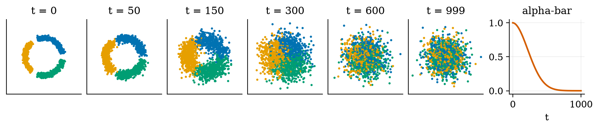
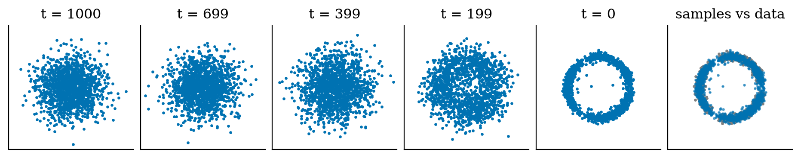
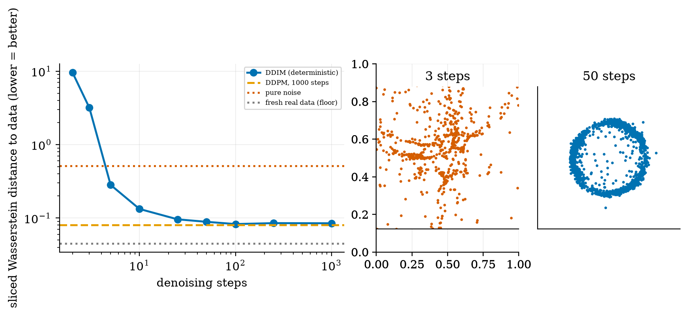
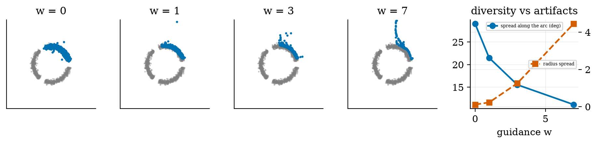
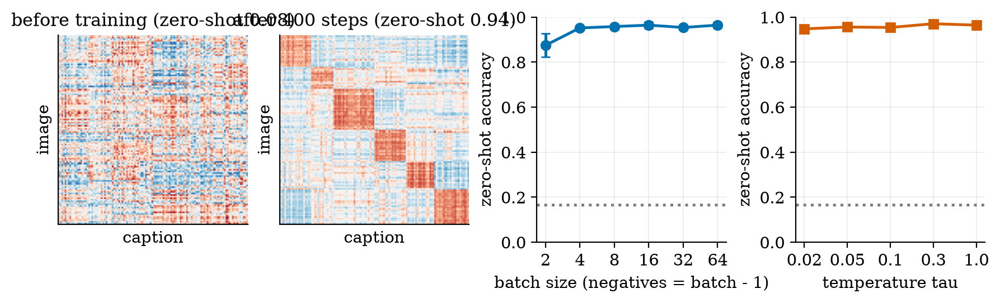
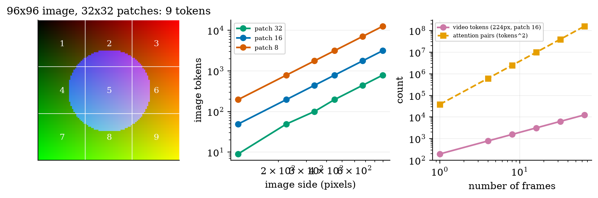
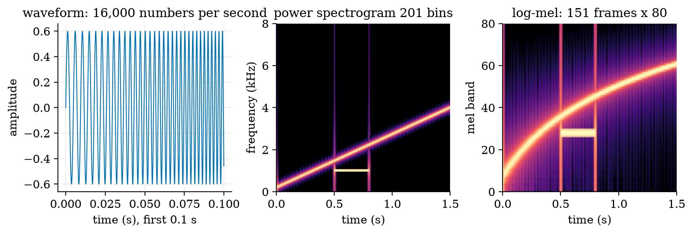

explain diffusion: the forward noising formula, the noise-prediction loss, and DDPM and DDIM sampling;
say what classifier-free guidance does and what it costs (less variety, off-manifold artifacts);
explain CLIP-style contrastive learning and how it gives zero-shot classification;
count tokens for images, video and audio and say why attention makes long video expensive;
describe the speech pipeline (log-mel features, speech-to-text) and compute word error rate.
The big picture
Text became tokens in Unit 3. Other media become tokens too: an image is cut into patches, sound into spectrogram frames. Generating images is a different problem: diffusion learns to remove noise step by step, and generation runs that process backwards from pure noise.
Text-to-image in three ideas. (1) A denoiser network predicts the noise in a corrupted sample. (2) A text (or label) condition steers it; guidance pushes harder toward the prompt. (3) A contrastive model such as CLIP puts images and text in one space so the prompt can be understood.
Measured on a toy model I trained (three arcs, NumPy): 25 or more DDIM steps match the 1000-step sampler; 3 steps is far worse than pure noise; strong guidance (w = 7) shrinks variety (arc spread 29° to 11°) and throws 7% of points off the circle. No real image model was run here.
Why long video is hard: 16 frames of 224-pixel video are 3,136 tokens, and attention costs 256 times a single image.
Key equations
Forward diffusion in one step.
Training: predict the noise that was added.
DDPM reverse step.
Classifier-free guidance.
Symmetric contrastive loss over a batch of image-text pairs.
Image tokens and the quadratic attention cost.
Figures

Forward diffusion on three arcs: by t = 600 only 16% of the signal amplitude is left; at t = 999, 0.6%.

The reverse path from noise to data with 1000 DDPM steps, and the final samples against the data.

Sampling steps: 25 or more DDIM steps reach the quality of 1000 steps; 3 steps is worse than pure noise.

Classifier-free guidance: more weight, less variety along the arc and more points off the circle.

Contrastive learning on toy image-text pairs: zero-shot accuracy 0.08 before training, 0.94 after 400 steps.

Patches become tokens: counts for images and video, and the quadratic cost of attention.

Audio as a spectrogram: waveform, power spectrogram and 80-band log-mel features.
Try it in the playground
Each link opens the widget with good starting settings. Every option has a plain-English label and a one-line help text.
Diffusion denoiser (real model)
The NumPy-trained network runs in your browser: noise to data, with guidance and step count.
Plain NumPy (the denoiser has hand-written backpropagation). The trained toy model is included. After downloading and unzipping the All code (.zip):
pip install -r requirements.txt
python codes/multimodal/multimodal_np/tests/test_multimodal_np.py # 13 tests, prints: ok
python figures/fig03_steps.py # loads the trained model, reproduces the steps figure
python codes/multimodal/multimodal_np/train_diffusion_toy.py # retrain it yourself (about 3-5 minutes)
For real models open the Colab notebook (BLIP question answering, CLIP zero-shot classification, Whisper speech-to-text with word error rate). It was written but not executed while authoring; its three models were confirmed to exist on the Hugging Face hub.
An honest note. Everything measured here is a 2-D toy. It shows mechanisms (noise prediction, step count, guidance trade-off), not the quality of real image generators.
Self-check
Answer in your head first, then click to reveal.
Write the forward diffusion formula and say what ᾱ controls.
x_t = √ᾱ_t x_0 + √(1−ᾱ_t) ε; ᾱ_t is the share of signal left at step t (0.9999 at t = 0, 0.0256 at t = 600).
What does the denoising network predict?
The noise ε that was added to the clean sample, given the noisy sample and the step t (and a condition).
Why can 3 DDIM steps be worse than pure noise?
The first step divides by √ᾱ_T ≈ 0.006, amplifying the network’s error about 160 times.
What does classifier-free guidance trade away?
Variety: higher w follows the prompt harder but concentrates samples and, at very high w, pushes them off the data manifold.
How does CLIP classify an image without class labels?
It compares the image embedding with embeddings of text prompts and picks the most similar.
How many tokens is a 224-pixel image with 16-pixel patches, and what is the attention cost of 16 such frames?
196 tokens; 16 frames are 3,136 tokens, 256 times the attention cost of one image.